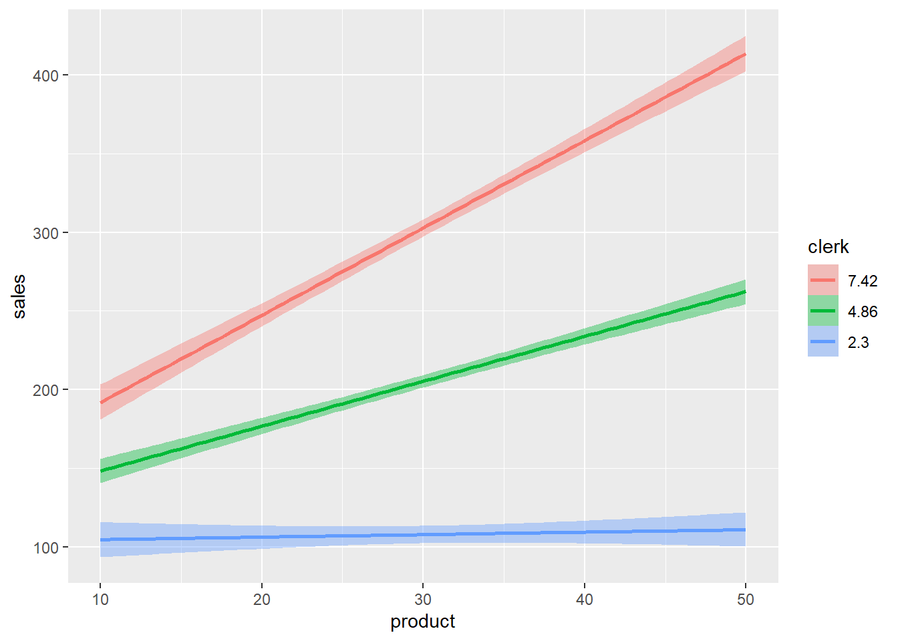
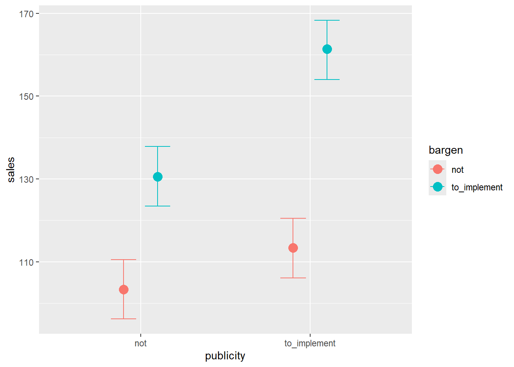
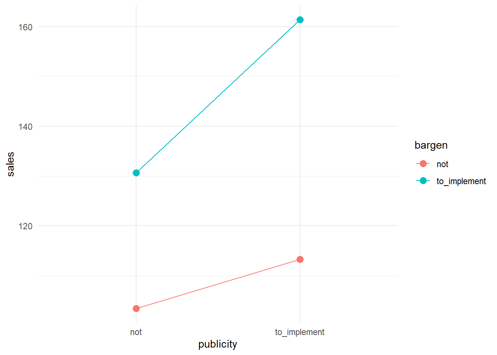
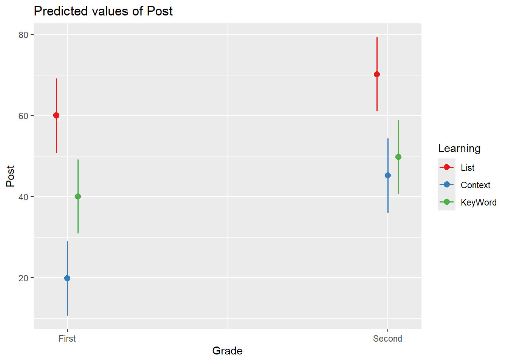

Chapter 10 Week9: 重回帰分析 (3)：交互作用の解釈
10.3 交互作用
2つ以上の独立変数の組み合わせが従属変数にもたらす影響
質的変数はトリートメント・コーディングを行ったと仮定
一般化線形モデルでは、「説明変数同士の積」を説明変数として加えることで、交互作用を表現する
10.3.1 量的変数 × 量的変数
model1 <- brm(sales ~ product * clerk, gaussian(link = "identity"),
data = dat, seed = 123, refresh = 0, iter = 5000, chains = 2)## Compiling Stan program...## Start sampling- 緑色（平均値）の線、赤色の線は右肩上がりになっている

| sales | ||
|---|---|---|
| Predictors | Estimates | CI (95%) |
| Intercept | 88.19 | 63.23 – 112.05 |
| product | -2.26 | -3.01 – -1.51 |
| clerk | 6.49 | 2.01 – 11.02 |
| product:clerk | 1.05 | 0.91 – 1.19 |
| Observations | 100 | |
| R2 Bayes | 0.967 | |
量的 × 量的変数の交互作用の予測値
切片 + Product × (-2.26) + Clerk × (6.49) + （Product × Clerk） × 1.05
店員数（Clerk）によって、製品数（Product）の係数の値が変化する
| 量的 × 量的変数の交互作用 | |||||
| product | clerk | Estimate | Est.Error | Q2.5 | Q97.5 |
|---|---|---|---|---|---|
| 0 | 0 | 88.22 | 12.28 | 63.23 | 112.05 |
| 10 | 0 | 65.63 | 8.83 | 47.53 | 82.50 |
| 0 | 10 | 153.01 | 12.85 | 128.51 | 178.89 |
| 10 | 10 | 235.59 | 9.22 | 217.78 | 254.15 |
tab: https://gedevan-aleksizde.github.io/rmarkdown-cookbook/html-tabs.html
10.3.2 量的変数 × 質的変数
- データの読み込み
コーディング（トリートメント）
- 他のコーディングでも分析可能である
dat$publicity <- factor(dat$publicity)
contrasts(dat$publicity) <- contr.treatment(2)
contrasts(dat$publicity)## 2
## not 0
## to_implement 1model2 <- brm(sales ~ publicity * temperature, gaussian(link = "identity"),
data = dat, seed = 123, refresh = 0, iter = 5000, chains = 2)## Compiling Stan program...## Start sampling- 宣伝アリの方が、切片（線の開始点）も傾きも大きいことが分かる
| sales | ||
|---|---|---|
| Predictors | Estimates | CI (95%) |
| Intercept | 42.80 | 31.39 – 54.62 |
| publicity2 | 17.49 | 1.15 – 33.52 |
| temperature | 2.59 | 1.94 – 3.23 |
| publicity2:temperature | 4.19 | 3.26 – 5.13 |
| Observations | 100 | |
| R2 Bayes | 0.904 | |
- 質的 × 量的変数の交互作用の予測値
df <- data.frame(
宣伝 = c("なし", "あり"),
`売り上げの予測値` = c(
"42.80 + temperature × 2.59",
"42.80 + 17.49 + temperature × (2.59 + 4.19)")
)
df %>%
gt() %>%
tab_header(title = "質的 × 量的変数の交互作用") %>%
cols_align(align = "center") %>%
tab_options(table.width = pct(100))| 質的 × 量的変数の交互作用 | |
| 宣伝 | 売り上げの予測値 |
|---|---|
| なし | 42.80 + temperature × 2.59 |
| あり | 42.80 + 17.49 + temperature × (2.59 + 4.19) |
- 気温の主効果は、宣伝がなかった時における気温の効果であることに注意。そのため、気温の主効果の数値だけではなく、交互作用を確認して結果を解釈する必要がある。
| 質的 × 量的変数の交互作用 | |||||
| publicity | temperature | Estimate | Est.Error | Q2.5 | Q97.5 |
|---|---|---|---|---|---|
| not | 0 | 42.89 | 5.91 | 31.39 | 54.62 |
| not | 10 | 68.80 | 3.29 | 62.26 | 75.37 |
| to_implement | 0 | 60.31 | 5.67 | 49.33 | 71.52 |
| to_implement | 10 | 128.06 | 3.13 | 121.93 | 134.27 |
10.3.3 質的変数 × 質的変数
- コーディング（トリートメント）
dat$publicity <- factor(dat$publicity)
contrasts(dat$publicity) <- contr.treatment(2)
contrasts(dat$publicity)## 2
## not 0
## to_implement 1## 2
## not 0
## to_implement 1model3 <- brm(sales ~ publicity * bargen, gaussian(link = "identity"),
data = dat, seed = 123, refresh = 0, iter = 5000, chains = 2)## Compiling Stan program...## Start sampling- 宣伝も安売りもありの方が売り上げが最も大きいことが分かる

| sales | ||
|---|---|---|
| Predictors | Estimates | CI (95%) |
| Intercept | 103.32 | 96.18 – 110.51 |
| publicity2 | 10.05 | -0.22 – 20.17 |
| bargen2 | 27.35 | 17.33 – 37.46 |
| publicity2:bargen2 | 20.72 | 6.04 – 35.36 |
| Observations | 100 | |
| R2 Bayes | 0.601 | |
質的 × 質的変数の交互作用の予測値
- 宣伝も安売りもあった場合、二つの主効果に加え、交互作用の影響が加算される
df <- data.frame(
宣伝 = c("なし", "あり", "なし", "あり"),
安売り = c("なし", "なし", "あり", "あり"),
`売り上げの予測値` = c("103.32", "103.32 + 10.05", "103.32 + 27.35", "103.32 + 10.05 + 27.35 + 20.72")
)
df %>%
gt() %>%
tab_header(title = "質的 × 質的の交互作用") %>%
cols_align(align = "center") %>%
tab_options(table.width = pct(100))| 質的 × 質的の交互作用 | ||
| 宣伝 | 安売り | 売り上げの予測値 |
|---|---|---|
| なし | なし | 103.32 |
| あり | なし | 103.32 + 10.05 |
| なし | あり | 103.32 + 27.35 |
| あり | あり | 103.32 + 10.05 + 27.35 + 20.72 |
- 得られた係数の結果と比較するとさらに分かりやすい
| 質的 × 質的変数の交互作用 | |||||
| publicity | bargen | Estimate | Est.Error | Q2.5 | Q97.5 |
|---|---|---|---|---|---|
| not | not | 103.34 | 3.68 | 96.18 | 110.51 |
| to_implement | not | 113.35 | 3.64 | 106.09 | 120.52 |
| not | to_implement | 130.65 | 3.70 | 123.49 | 137.85 |
| to_implement | to_implement | 161.30 | 3.70 | 154.02 | 168.31 |
10.3.3.1 下位検定
交互作用が有意だった場合に、単純主効果を調べるために行う
単純主効果
ある要因の各水準における、別の要因の効果のこと
e.g., Publicity条件における、Bargen実施の有無（to_impement/not）の平均値差
多重比較
- 水準が3以上などの場合、検定を繰り返すため、多重比較の問題が発生する。影響を軽減するため、補正を行う
交互作用が有意
sales
Predictors
Estimates
CI
p
(Intercept)
103.38
96.15 – 110.60
<0.001
publicity [2]
9.94
-0.28 – 20.16
0.057
bargen [2]
27.27
17.05 – 37.49
<0.001
publicity [2] × bargen
[2]20.80
6.34 – 35.25
0.005
Observations
100
R2 / R2 adjusted
0.604 / 0.592
 -
emmeans()関数を使って、下位検定を行うbargenの単純主効果（publicityの各水準ごとにbargenの効果を調べる）
bargen by publicity
## publicity = not: ## contrast estimate SE df t.ratio p.value ## not effect -13.6 2.57 96 -5.297 <.0001 ## to_implement effect 13.6 2.57 96 5.297 <.0001 ## ## publicity = to_implement: ## contrast estimate SE df t.ratio p.value ## not effect -24.0 2.57 96 -9.335 <.0001 ## to_implement effect 24.0 2.57 96 9.335 <.0001 ## ## P value adjustment: bonferroni method for 2 testspublicityの単純主効果（bargenの各水準ごとにpublicityの効果を調べる）
publicity by bargen
## bargen = not: ## contrast estimate SE df t.ratio p.value ## not effect -4.97 2.57 96 -1.930 0.1132 ## to_implement effect 4.97 2.57 96 1.930 0.1132 ## ## bargen = to_implement: ## contrast estimate SE df t.ratio p.value ## not effect -15.37 2.57 96 -5.968 <.0001 ## to_implement effect 15.37 2.57 96 5.968 <.0001 ## ## P value adjustment: bonferroni method for 2 tests
10.4 ハンズオンセッション
10.4.1 質的 × 質的（サムコントラスト）
## Grade Learning id Post
## 1 First List 1 73
## 2 First List 2 59
## 3 First List 3 63
## 4 First List 4 59
## 5 First List 5 46##
## First Second
## 15 15##
## Context KeyWord List
## 10 10 10dat$Grade <- factor(dat$Grade)
dat$Learning <- factor(dat$Learning, levels = c("List", "Context", "KeyWord"))- 各群ごとの平均
## Grade Post
## 1 First 39.93333
## 2 Second 55.06667## Learning Post
## 1 List 65.1
## 2 Context 32.5
## 3 KeyWord 44.9## Grade Learning Post
## 1 First List 60.0
## 2 Second List 70.2
## 3 First Context 19.8
## 4 Second Context 45.2
## 5 First KeyWord 40.0
## 6 Second KeyWord 49.8- Ground Mean
## [1] 47.5## [,1]
## First 1
## Second -1## [,1] [,2]
## List 1 0
## Context 0 1
## KeyWord -1 -1##
## Call:
## lm(formula = Post ~ Grade * Learning, data = dat)
##
## Residuals:
## Min 1Q Median 3Q Max
## -14.2 -6.7 -1.0 8.1 15.2
##
## Coefficients:
## Estimate Std. Error t value Pr(>|t|)
## (Intercept) 47.500 1.807 26.285 < 0.0000000000000002 ***
## Grade1 -7.567 1.807 -4.187 0.000328 ***
## Learning1 17.600 2.556 6.887 0.000000402 ***
## Learning2 -15.000 2.556 -5.869 0.000004701 ***
## Grade1:Learning1 2.467 2.556 0.965 0.344071
## Grade1:Learning2 -5.133 2.556 -2.009 0.055952 .
## ---
## Signif. codes: 0 '***' 0.001 '**' 0.01 '*' 0.05 '.' 0.1 ' ' 1
##
## Residual standard error: 9.898 on 24 degrees of freedom
## Multiple R-squared: 0.762, Adjusted R-squared: 0.7124
## F-statistic: 15.37 on 5 and 24 DF, p-value: 0.0000008253- 以下のような作図を行う場合、コーディングによって図中のパターンが変わることはない
#install.packages("sjPlot")
library(sjPlot)
plot_model(
model_sum,
type = "pred",
terms = c("Grade", "Learning")
)
10.4.2 係数の解釈
- 記述統計の値を参照した考えると分かりやすい
- Intercept: grand mean (47.5)
- GradeSecond: First - grand mean (39.93333 - 47.5)
- Learning1: List - grand mean (65.1 - 47.5)
- Learning2: Context - grand mean (32.5 - 47.5)
- GradeSecond:Learning1: {2 * (60 - 70.2) + (45.2 - 19.8) + (49.8 - 40)} ÷ 6
\[ \frac{2(M_{\text{リスト1}} - M_{\text{リスト2}}) + (M_{\text{文脈2}} - M_{\text{文脈1}}) + (M_{\text{キー2}} - M_{\text{キー1}})}{6} \]
- GradeSecond:Learning2: {(70.2-60) + 2 * (19.8-45.2) + (49.8 - 40)} ÷ 6
\[ \frac{(M_{\text{リスト2}} - M_{\text{リスト1}}) + 2(M_{\text{文脈1}} - M_{\text{文脈2}}) + (M_{\text{キー2}} - M_{\text{キー1}})}{6} \]
10.4.3 質的 × 質的（反復コントラスト）
## 2-1
## First -1/2
## Second 1/2## 2-1 3-2
## List -2/3 -1/3
## Context 1/3 -1/3
## KeyWord 1/3 2/3##
## Call:
## lm(formula = Post ~ Grade * Learning, data = dat)
##
## Residuals:
## Min 1Q Median 3Q Max
## -14.2 -6.7 -1.0 8.1 15.2
##
## Coefficients:
## Estimate Std. Error t value Pr(>|t|)
## (Intercept) 47.500 1.807 26.285 < 0.0000000000000002 ***
## Grade2-1 15.133 3.614 4.187 0.000328 ***
## Learning2-1 -32.600 4.426 -7.365 0.000000132 ***
## Learning3-2 12.400 4.426 2.801 0.009898 **
## Grade2-1:Learning2-1 15.200 8.853 1.717 0.098867 .
## Grade2-1:Learning3-2 -15.600 8.853 -1.762 0.090780 .
## ---
## Signif. codes: 0 '***' 0.001 '**' 0.01 '*' 0.05 '.' 0.1 ' ' 1
##
## Residual standard error: 9.898 on 24 degrees of freedom
## Multiple R-squared: 0.762, Adjusted R-squared: 0.7124
## F-statistic: 15.37 on 5 and 24 DF, p-value: 0.000000825310.4.4 係数の解釈
- 記述統計の値を参照した考えると分かりやすい
- Intercept: grand mean
- Grade2-1: Second - First
- Learning2-1: Context - List
- Learning3-2: Keyword - Context
- Grade2-1:Learning2-1: (ContextにおけるSecond-First) - (ListにおけるSecond-First) = (45.2 - 19.8) - (70.2 - 60)
- Grade2-1:Learning3-2: (KeywordにおけるSecond-First) - (ContextにおけるSecond-First) = (49.8 - 40) - (45.2 - 19.8)
emmeans()関数で下位検定を行う場合も、どのコーディングをあてはめても結果は同じになります。
- ここまで見てきたように、どのようなコーディングを適用したかで係数の値は異なります。また、何と何を比較しているのかによって係数の正負も変わります。必ず、どの変数にどのようなコーディングを適用したのか、どの水準とどの水準を比較したのかを第三者から見て分かるように記載しましょう。
- 2水準 × 3水準の交互作用でも係数の解釈は結構複雑になります。デザインはシンプルな方が解釈する側も分析をしやすいです。
10.6 次週までの課題
10.7 参考文献
- 南風原
- 馬場 RとStanではじめるベイズ統計モデリングによるデータ分析
- 小島ますみ（2022）. 外国語教育研究における（一般化）線形混合モデル：仮説に適したコーディング・モデリングを中心に The 2021 Annual Conference on Vocabulary Acquisition
- https://debruine.github.io/faux/articles/contrasts.html#x3-design